Usuwanie węzła
Przy usuwaniu węzła musimy wziąć pod uwagę więcej przypadków, jednak sama operacja nie jest jakoś mega skomplikowana (jednak dużo będzie "rodzinnych" relacji, więc nie zrażaj się po zobaczeniu spisu treści - razem damy radę! ;] ). W związku tym, że drzewo czerwono-czarne jest "zaawansowaną" wersją binarnego drzewa przeszukiwań nasza strategia jest następująca:
- Usuwamy węzeł, jak przy BST
- Naprawiamy naruszone właściwości drzewa czerwono-czarnego
Spis treści (kliknij, by nie scrollować ;]):
- Garść przydatnych pojęć
- Przypomnienie - usuwanie węzła w BST w pigułce
- Usuwanie w stylu BST - przypadek 1 - usuwany węzeł ma tylko lewego syna
- Usuwanie w stylu BST - przypadek 2 - usuwany węzeł ma tylko prawego syna
- Usuwanie w stylu BST - przypadek 3 - usuwany węzeł posiada dwóch potomków i prawy jest jego następnikiem
- Usuwanie w stylu BST - przypadek 4 - usuwany węzeł posiada dwóch potomków, ale prawy nie jest jego następnikiem
- Naprawa RBT - przypadek 1 - brat węzła zastępującego jest czerwony
- Naprawa RBT - przypadek 2 - brat węzła zastępującego jest czarny i ma czarnych synów
- Naprawa RBT - przypadek 3 - brat węzła zastępującego jest czarny, lewy syn brata czerwony i prawy czarny
- Naprawa RBT - przypadek 4 - brat węzła zastępującego jest czarny i jego prawy syn czerwony
Garść przydatnych pojęć
Będą nam teraz potrzebne takie pojęcia jak:-
Poprzednik - jest to węzeł o kluczu bezpośrednio mniejszym od klucza wskazanego węzła.
W poniższym drzewie binarnym poprzednikiem węzła o kluczu "41" jest węzeł o kluczu "32". Jak go znaleźć?
To proste! Idziemy od węzła o kluczu "41" do lewego syna, a później maksymalnie w prawo. Ostatni węzeł niebędący liściem
jest poprzednikiem.
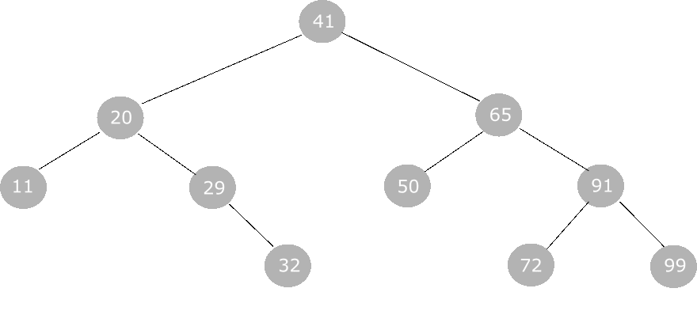
-
Następnik - (analogicznie) jest to węzeł o kluczu bezpośrednio większym od klucza wskazanego węzła.
W poniższym drzewie binarnym następnikiem węzła o kluczu "41" jest węzeł o kluczu "50". Jak go znaleźć?
To proste! Idziemy od węzła o kluczu "41" do prawego syna, a później maksymalnie w lewo. Ostatni węzeł niebędący liściem
jest następnikiem.
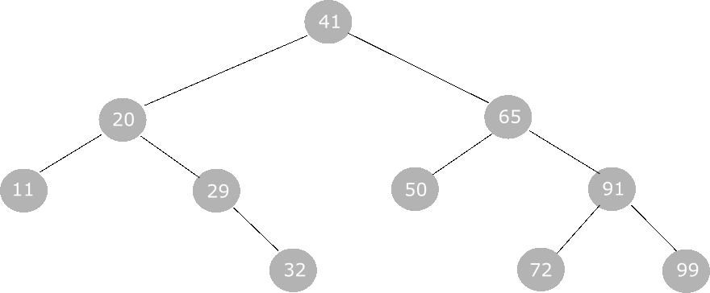
Przypomnienie - usuwanie węzła w BST w pigułce
-
Jeśli węzeł nie ma dzieci, to możemy go zwyczajnie usunąć.

-
Jeśli węzeł ma 1 potomka (lewego lub prawego), to on zastępuje usuwany węzeł.
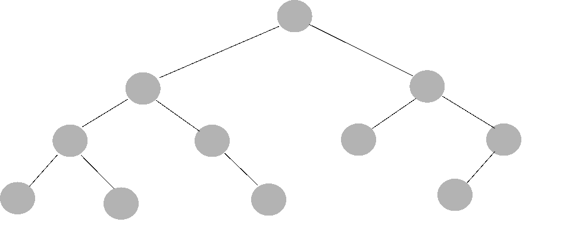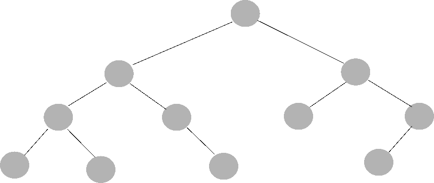 -
Jeśli węzeł ma obu potomków, to zastępujemy usuwany węzeł albo poprzednikiem, albo następnikiem (Twój wybór ;]).
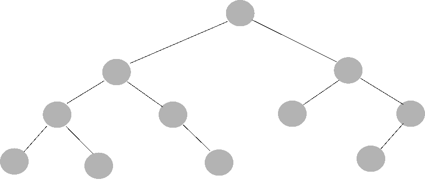
-
Jeśli poprzednik/następnik ma dziecko, to to dziecko zastępuje poprzednika/następnika, gdy ten zastąpi usuwany węzeł.
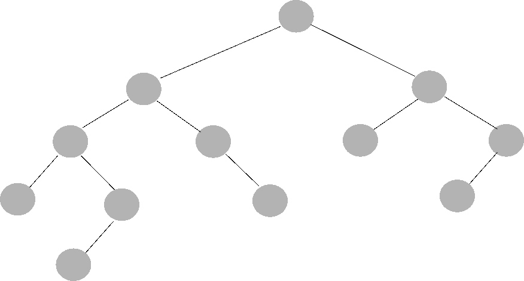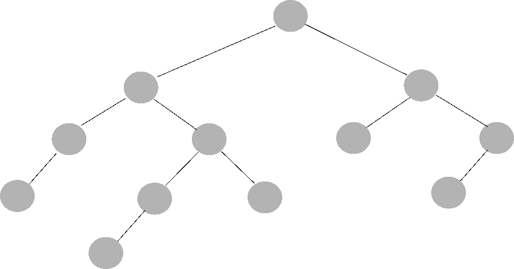
Usuwanie w stylu BST - przypadek 1 - usuwany węzeł ma tylko lewego syna
Załóżmy, że mamy takie drzewko czerwono-czarne.
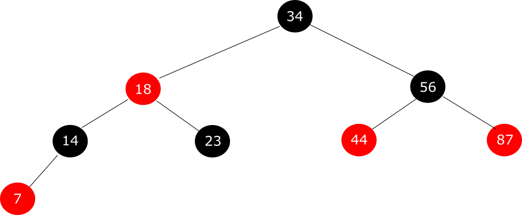
Chcemy usunąć węzeł o kluczu "14". Usuwamy go jak w BST. W jego miejsce wchodzi jego lewy potomek.
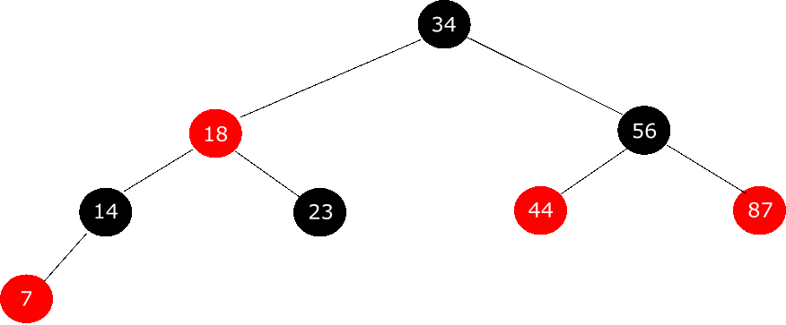
Jak widać, mamy konflikt - czerwony węzeł nie może mieć czewronych dzieci. Aby to naprawić dziecko usuniętego węzła przejmuje również po nim kolor. Jeśli usuwany węzeł był czarny, to musimy przekolorować dziecko na czarno.
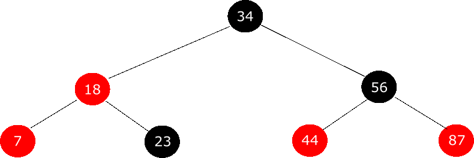
Gotowe!
Usuwanie w stylu BST - przypadek 2 - usuwany węzeł ma tylko prawego syna
Jest to lustrzany przypadek do poprzedniego, więc w poniższym drzewku spróbuj sama/sam usunąć węzeł o kluczu "14", np. na kartce. Jak skończysz - wróć do tego opracowania.
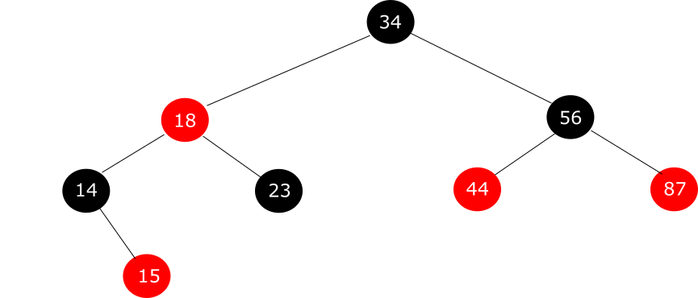
Usuwamy węzeł o kluczu "14" jak w BST - zastępujemy "dziurę" jego prawym potomkiem.
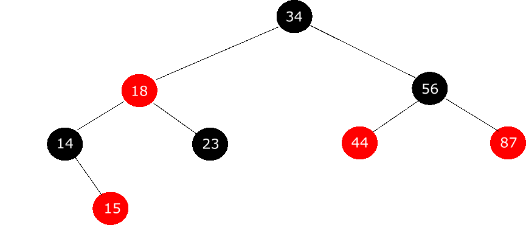
Konflikt - zmieniamy kolor węzła-potomka, ale to już wiesz, prawda?
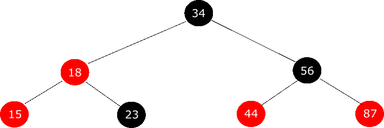
Miałaś/miałeś tak samo? Gratulacje!
Usuwanie w stylu BST - przypadek 3 - usuwany węzeł posiada dwóch potomków i prawy jest jego następnikiem
W tym przypadku miejsce usuwanego węzła zajmuje jego następnik. Po usunięciu węzła następuje przekolorowanie. Sam następnik otrzymuje kolor węzła usuwanego. Sprawdźmy to na przykładzie.
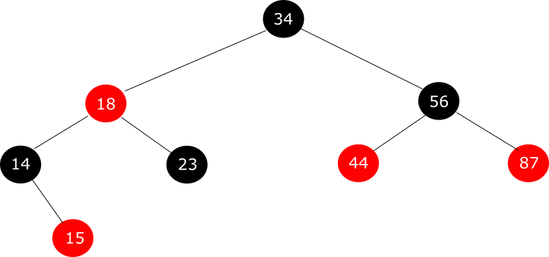
Mamy takie drzewko i chcemy usunąć węzeł o kluczu "18".
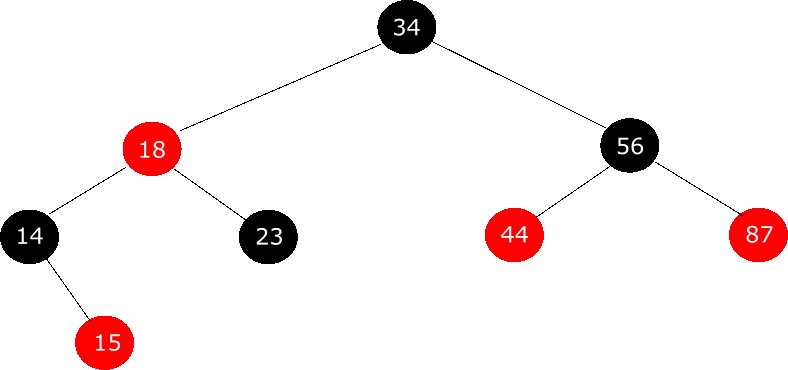
Okej, usunęliśmy i zrobiliśmy przekolorowanie. Pytanie, czy wszystkie właściwości drzewa RBT zostały zachowane? Podpowiemy - nie. Jest o 1 czarny węzeł mniej, co za tym idzie już nie każda ścieżka z dowolnego węzła do liścia ma taką samą ilość czarnych węzłów. Aby to naprawić, prawy potomek następnika otrzyma dodatkowy kolor - taki, jakiego był następnik przed przekolorowaniem.
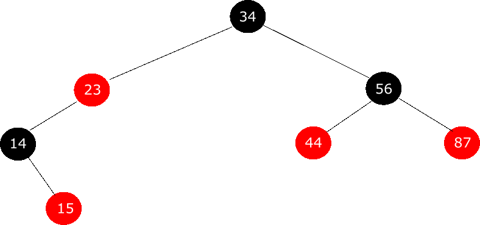
Podwójny kolor czarny lub czerwono-czarność danego węzła zostanie naprawiona w przypadkach dotyczących napraw RBT.
Usuwanie w stylu BST - przypadek 4 - usuwany węzeł posiada dwóch potomków, ale prawy nie jest jego następnikiem
Mamy mniej więcej taką sytuację
Chcemy węzeł x usunąć z drzewka. W jego miejsce wchodzi następnik x3, a w miejsce następnika x3 wchodzi jego prawy potomek x4. Reszta zostaje bez zmian. Co z kolorami? Zasady są następujące:
- nastepnik x3 przejmuje kolor po usuniętym węźle x
- jeśli następnik x3 był czarny, to węzeł x4 dostaje dodatkowy kolor czarny i jest teraz podwójnie czarny
- jeśli następnik x3 był czerwony, to węzeł x4 dostaje dodatkowy kolor czerwony i jest teraz czerwono-czarny
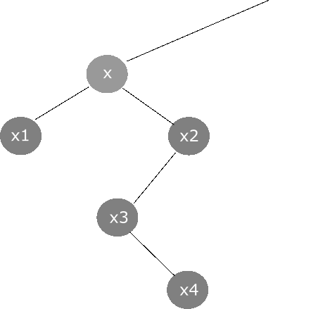
Naprawa RBT - przypadek 1 - brat węzła zastępującego jest czerwony
Uwaga! Wprowadzamy pewną konwencję w grafikach i w nazewnictwie, która obowiązuje tylko do poniższych przypadków.
- Jeśli jego nazwa będzie z *, to oznacza, że dany węzeł posiada dodatkowy kolor
- Jeśli węzeł jest szary, to oznacza, że może być czarny lub czerwony
Mamy taki przypadek
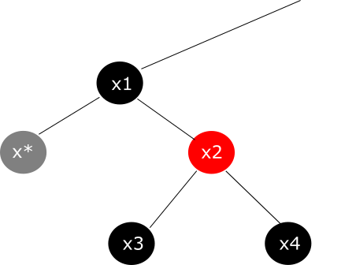
Rotujemy węzeł x1 w lewo. Następnie zamieniamy kolory węzłów x1 i x2.
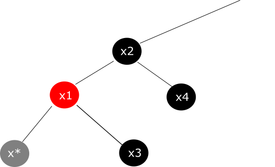
Dalej sytuacja się rozstrzyga na podstawie kolorów węzłów potomnych od brata x*, czyli x3.
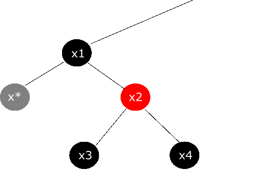
Naprawa RBT - przypadek 2 - brat węzła zastępującego jest czarny i ma czarnych synów
Nasz punkt startowy:
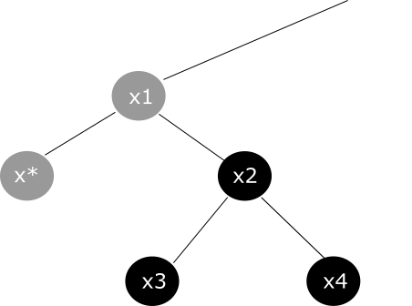
Zabieramy z węzłów x* i x2 kolor czarny i przenosimy go w górę, do węzła x1.
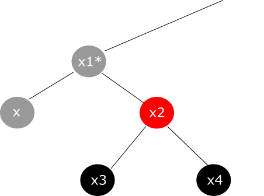
W wyniku takiej operacji, węzeł x staje się normalnym węzłem czerwonym lub czarnym (w zależności, czy był czerwono-czarny, czy podwójnie czarny),a węzeł x2 staje się czerwony (jego potomkowie są czarni, więc nie naruszami struktury drzewa RBT). Niestety, skoro teraz węzeł x1* posiada dodatkowy kolor, to musimy wykonać procedurę naprawy rekurencyjnie w górę drzewka.
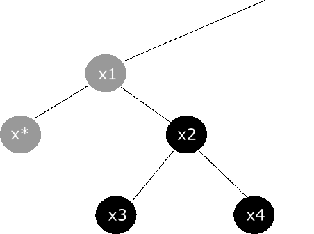
Naprawa RBT - przypadek 3 - brat węzła zastępującego jest czarny, lewy syn brata czerwony i prawy czarny
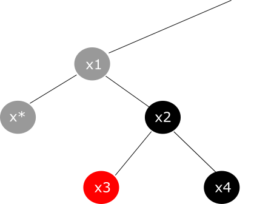
Wykonujemy następujące kroki:
- Rotujemy węzeł x2 w prawo
- Zamieniamy kolory węzłów między x2 a x3
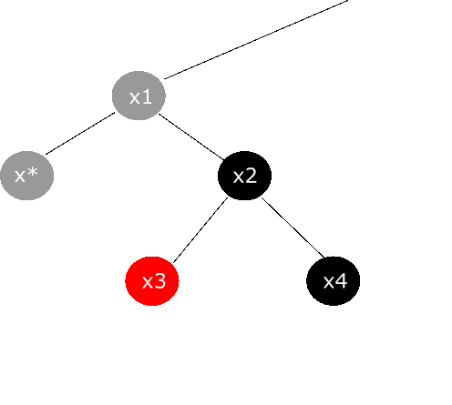
Naprawa RBT - przypadek 4 - brat węzła zastępującego jest czarny i jego prawy syn czerwony
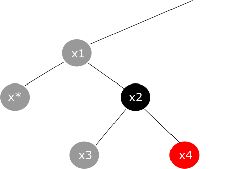
Wykonujemy następujące kroki:
- Rotujemy węzeł x1 w lewo
- x1 oddaje swój kolor x2 - staje się przez chwilę bez koloru, przezroczysty
- x* oddaje swój nadmiarowy kolor x1 - x1 staje się czarnym węzłem
- na koniec kolorujemy x4 na czarno